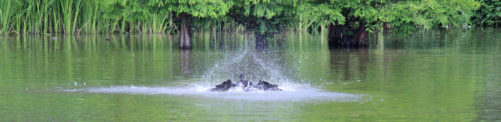

○ はじめに
「理科作文」の「その１」がいっぱいになってきたので、
ここに「その２」を設ける。
「もくじ」の１～５は、「その１」か引っ越してきている。
新規には、６の「火星最接近」から始まる。
「理科作文」－その１
作文ワールド（原点） 作文ワールドⅡ（１人１人の作文）
作文ワールドⅢ「社会科作文１」 ーその２ ーその３
作文ワールドⅤ「スポーツ作文１」 －その２
Ⅵ（七五の四行詩） Ⅶ（図工作文） Ⅸ「家庭科作文」
Ⅷ（エトセトラ） Ⅹ（作文のこころ）
「東日本大震災」の作文・第１部 第２部・第３部
作文打出の小づち
総もくじ
小学生の作文教室 作品展示場（扉） トップページ
１．『大陸は動く』 （小６ 加山もも）
ももちゃんは、このホームページが「作文ワールド」を設けたときに
最初に『風』で登場している。
ももちゃんは好奇心が強く、ちょっと興味をもったことがあれば、
すぐに資料をあさり始める。
| はじめの作文 |
添削例・諸注意 |
今から90年ほど前、ドイツの気象学者アルフレッド・ウェゲナーは、アフリカの西海岸と南アメリカの東海岸を合わせると、ぴったり重なり合うことに気づいて、強く興味をそそられた。
ある時、ウェゲナーの頭に大たんな考えがひらめいた。大西洋の東と西の大陸はもともとくっついていて、それが２つに分かれて移動し始め、今では何千キロメートルも離れてしまったのではないかと思ったのである。ウェゲナーは研究を進めるにつれて、この考えの正ししさに、しだいに確信を深めていった。この両方の大陸の地層がまったく同じだったり、同じ種類の化石が発見されたりしたからだ。
けれど、この「大陸移動説」に多くの学者は賛成しなかった。大陸が動く原動力がはっきりしなかったからだ。けれども、今になって原因が少しずつ明らかになってきた。大西洋のまん中にはほぼ南北に海底山脈がえんえんと走っていて、その頂上にそってたくさんの地震が起きていること、また、海底の温度が他の場所より高いことが分かった。実は、海底山脈の真下には、岩石がどろどろに溶けたマグマがわきあがってきている。このマグマが海底まで上がってくると、冷え固まって岩盤となるが、もう少し深い所では完全には冷え固まらず、岩盤を下から突き動かしながらせり上がっているため、岩盤を左右に押し広げて大陸を動かしているのである。
わたしは、大陸がほんとうに動いていると知って、びっくりしました。90年も前の説が今になって認められたことにも驚きました。海底では今も火山が活動しているから、アフリカと南アメリカはどんどん離れていってしまうなあと思いました。 |
← けれども、現在までに原因が……
← 海底の水温が
|
説明の手際のよさもさることながら、
おしまいのひとことにロマンが感じられる。
もどる
２． 『金環日食』 （小６ 高橋 虎太郎）
２０１２年のその日、
雲がかかって見えない地方が多かったようだが、
東京ではかろうじて見ることができた。
| はじめの作文 |
添削例 |
5月21日の朝7時30分ごろ、校庭で金環日食を観察しました。不思議な景色でした。
朝６時半に家を出て、６時５０分ごろ学校に着きました。まだ早かったので、先生と家族以外、ほとんどだれもいませんでした。遮光版を出して太陽を見てみると、もう日食が始まっていて、左下が欠けていました。太陽はオレンジ色でした。
７時半ごろになって、児童のみんながやってきて、先生の指示で遊具の近くに集まりました。そして、校長先生の話を聞きました。話は、観察する時の注意や観察する時間のことでした。お話が終わって、７時１５分ぐらいから観察を始めました。友達の日食メガネで見てみたら、太陽が黄色や緑色に見えました。おもしろかったです。太陽を直接見ても日食は見えないのに、日食メガネを通して見ると、日食が見えるので、不思議でした。たまに雲が太陽を隠して、日食が見えなくなることがありました。だけど、すぐに晴れました。ピンホールも使ってみました。ちゃんと日食が見えました。
７時３０分ごろに太陽は金環になっていました。急いでカメラをもってきて、写真をとりました。なんとかとれました。金環日食のときは、辺りが少し暗くなりました。その後も観察を続けました。しばらくして、三日月のような形になったころ、校舎の中に入りました。
金環日食が観察できて、早起きしたかいがあったと思いました。写真もうまくとれました。今度また日食があったら、観察したいです。 |
※ 日食や金環日食の説明をどこかに入れておくといいね。
※ どんな遮光板だったのかな。
太陽は右上が三日月形からだんだん先が延びていって、円い輪になりました。金環です。急いで……
|
話はよく分かる。細かいところを直して仕上げよう。
| 書き直した作文 |
添削例 |
5月21日の朝7時30分ごろ、校庭で金環日食を観察しました。日食は、太陽と地球の間に月が入ってきて太陽が見えなくなる現象です。日食には皆既日食と金環日食の二つがあります。この違いは、月が地球の周りを楕円を描いて回っていることによります。楕円の直径が短いと、太陽がちょうど月の大きさの陰にすっぽり隠れて皆既日食になり、長いと、月が地球から遠ざかるので、金環が見えるのです。
朝６時半に家を出て、６時５０分ごろ学校に着きました。まだ早かったので、先生と家族以外、ほとんどだれもいませんでした。黒いセルロイドの遮光版を出して太陽を見てみると、もう日食が始まっていて、左下が欠けていました。太陽はオレンジ色でした。
７時半ごろになって、児童のみんながやってきて、先生の指示で遊具の近くに集まりました。そして、校長先生の話を聞きました。話は、観察する時の注意や観察する時間のことでした。お話が終わって、７時１５分ぐらいから観察を始めました。友達の日食メガネで見てみたら、太陽が黄色や緑色に見えました。レンズによって色が違って見えるのが不思議でした。また、太陽を直接見ても日食は見えないのに、日食メガネを通して見ると日食が見えるのも不思議でした。たまに雲が太陽を隠して、日食が見えなくなることがありました。だけど、すぐに晴れました。ピンホールも使ってみました。ちゃんと日食が見えました。
７時３０分ごろ、太陽は三日月の形から金環になりました。急いでカメラをもってきて、写真をとりました。なんとかとれました。金環日食のときは、辺りが少し暗くなりました。不思議な景色でした。その後も観察を続けました。しばらくして、左下が三日月の形になったころ、校舎の中に入りました。
金環日食が観察できて、早起きしたかいがあったと思いました。写真もうまくとれていました。 |
◎ このくらいのことを知った上で観察すると、天体が動きのあるものとして、立体的にとらえられるだろうね。
|
もどる
３. 『科学部』 （中１ 矢座孟之進）
ユニークな部活動がある。
孟くんは国立大学附属の国際中等教育学校に通っている。
| はじめの作文 |
添削例 |
入学して、僕はすぐ科学部に入りました。入ったきっかけは、部活の紹介でとてもおもしろそうだったからです。
入学してから数日後に、先輩たちによる部の紹介がありました。一番気になったのは、最も興味のあった科学部です。説明によると、自分で好きなテーマを決めて、それを研究し、文化祭で発表したり、学校の研究大会に応募したりするということでした。ぼくが最もひかれたのは、自由に研究できるという点でした。今までは決められた範囲でしか勉強できなかったので、「自由」ということが僕の心を動かしました。
それから数日後、僕は科学部へ見学に行ってみました。部の紹介で説明していたとおり、みんなそれぞれ違う研究をしていました。それも想像以上で、高度な研究がたくさんありました。例えば、最高学年の部長さんは、植物の化石の葉の気孔の数から、当時の二酸化炭素の濃度について研究し、もうすぐ論文を書き上げて、学会で発表するということでした。他にも、ルミノール反応を使って、人間の血液中に含まれる鉄分と同じものをもつ植物や動物を探すという研究をしている人もいました。ぼくはこれらを聞いて、入部を決断しました。
部活の１日目は、研究のテーマを決めることでした。僕は物理学や化学に興味があったのですが、それに限定してしまうと、テーマがなかなか思いつかないので、とにかく思い浮かぶ疑問を友だちと二人で並べていきました。そして、「モーツァルト効果は植物にもあるのか」ということと、「メントス・コーラはなぜ強く反応するのか」ということを調べることにしました。
今は、研究の計画を立てて必要なものをそろえ、早く研究が始められるようにしているところです。 |
← それについて実験や観察をして論文にまとめ、文化祭で……
◎ 研究の例のはいっているのがいいね。
← ……思いつかないので、いっしょに入部した友だちと二人で、とにかく……を書き並べて……
※ 「今」というのは、５月の中旬のことだね。
|
「モーツァルト効果」というのは、例えば、乳牛などにはあるようだ。
植物にもあるかどうか、研究の成果が楽しみだ。
もどる
４．『スーパームーン』 （小５ 清水 耀世）
これは、２０１４年のことである。
|
|
９月９日、ぼくは一人でスーパームーンを見ました。ほんとうは９月８日が十五夜だったので、その時に見たかったけれど、雲で月が見えませんでした。９日に外に出て月を見ると、とても大きく見えました。迫力があって、とてもきれいでした。
インターネットで「スーパームーン」について調べてみると、月が最も地球に近づいて最も大きく見える月のことでした。月が地球から最も遠い位置にあるときよりも１４％も大きく見え、３０％も明るいそうです。月はふつう地球から３８万㎞離れているけれど、この日は３５万㎞まで近づいているのでした。その原因を調べてみると、月は地球の引力の影響を受けて、公転軌道が円ではなく、だ円になっていて、そのため、地球との距離が少しずつずれていき、最も近づいた時がスーパームーンに見えるということでした。
ぼくはスーパームーンを見て、原因などを調べたので、月がとても身近に感じられました。ぼくのところへ近づいてきてくれた月に感謝します。 |
← ……調べてみると、これは、月が地球に最も……
◎ 「調べる」ときは、このくらいしつこくないといけないよね。 |
２０１４年にスーパームーンが見えたのは、
７月１２日、８月１０日、９月９日の、３回もあったということだ。
２０１５年に見えるのは９月２８日で、中秋の名月（十五夜）の翌日だそうだ。
もどる
５．『自作パソコン』 （中2 杉山拓生）
手際のよい作文を紹介しよう。
能力というのはどこに潜んでいるか分からない。
そんな例でもある。
| はじめの作文 |
添削例・諸注意 |
僕は半年くらい前から、高いスペック（性能）をもつ自分専用のパソコンがほしいと思っていた、なぜ高いスペックが必要なのかというと、、よく動画編集をするからだ。これまでのパソコンだと、、ＣＰＵの動作が遅い上に、コアが１つか２つくらいしかないため、動画の編集が遅かった。
今年の1月、開発コードネームをがSandy Bridge という新たなＣＰＵを搭載したパソコンがほしいと思った。しかし、1月下旬に、このＣＰＵに対応したマザーボードに不具合のあることが発表され、それらは回収された。そして、3月中旬に、不具合が直された新しいマザーボードが発売された。
それから数か月たって、母の実家に帰省すると、 豊くん（母の妹の夫。僕の親たちが前からそう呼んでいるので、僕も小さい時からそう呼んでいる）に、「拓生くんもパソコン、自作してみなよ」と言われた。その時はまだパソコンのパーツなどにはあまり興味がなかったので、「いやぁ、無理ですよぉ」と流していた。だが、最近になり、本格的にパソコンがほしくなってきたので、自作することに決めた。親に「誕生日プレゼントに買ってやろう」と言われたので、その日までパーツのリスト作りをした。ＣＰＵ、マザーボード、メモリ、ＨＤＤ、ドライブ、ＰＣケース、グラフィックボード、ＯＳ等々。
下調べのため、夏休みに父と秋葉原へ行った。その時、グラフィックボードが特価で、すごく安かったので、それを買ってもらった。
ついに誕生日になった。買うときは、ソフマップかツクモのどちらかでまとめ買いをすることにした。そのほうが保証の管理がしやすいからだと、豊くんに勧められていたからだ。9月10日になって、父と秋葉原に行った。最初にソフマップで見積もってもらった。だが、品揃えが悪く、店員の対応もよくなかったので、とりあえず見積もりだけをもらって、ツクモに行った。ツクモにはまとめ買い専門のフロアがあった。見積もりをしてもらうと、「ＣＰＵとメモリの相性が悪いかもしれない」と言われた。「何かいいものありますか」と聞くと、ちゃんと相性が合うものを持ってきてくれた。ＣＰＵは
Core i7 2600 を選んでいたのだが、店員さんに「4500円で 2600k にできますよ」と言われた。迷わず「お願いします」と言った。2600k
になると、かなり性能がよくなるので、すごくうれしかった。見積もりを終え、ここで買うことに決めた。保証料を入れて、全部で8万9980円だった。買ってしまうと、早く家に帰って組み立てたくなったので、父を説得して、早々に家に帰った。
家に帰ると、すぐに開封し、組み立てを始めた。力のいる作業はなく、スムーズに進んだ。ＣＰＵをマザーボードに付け、ケースに入れ、ＨＤＤを付け、ドライブを付け、電源ランプを付けて、最後に全ての配線をした。ケースのふたを閉じると完成だ。ディスプレイを接続して電源を入れた。ディスプレイにきちんと文字が出て正常に起動した。ドライブにWindows7 professional のインストールディスクを入れると、何の問題もなくインストールされた。（結果論だが、スムーズに動いたので、保証料の2,100円は全くいらなかった）。インターネットに接続する前に、ウィルス対策ソフトを入れ、動画編集ソフトを入れた。いざ編集してみると、すごく速くてびっくりした。これで、動画編集の時間を短縮できるようになった。
今回作ってみて、意外に簡単に作れてしまった。そんなに時間もかからなかった。これで、動画編集だけでなく、インターネットの表示時間も早くなるので、大満足だ。14歳のいい誕生日プレゼントだった。
（以上、約1,600字）、 |
※ ＣＰＵ（中央演算装置。パソコンの脳のようなもの）
※ コア（（ＣＰＵの中心部）
※ 2011年1月
※ マザーボード（パソコンの基本的な部品を搭載している基盤）
← 帰省したとき、
← 親に話すと、「誕生日……
← ……言われたので、誕生日までパーツの……
※ ＨＤＤ（ハード ディスク ドライブ。記憶媒体）
※ ＯＳ（オペレイティング システム。実行管理の基本ソフト）
← ……と聞くと、相性のよいものを持ってきてくれた。
← 他に買い物をしたそうな父を説得して、
|
実にさらさらと書いていったのだが、
きっと、パソコンを組み立てる手順と同じように、
筋書きもきちんと頭の中にあったのだろう。
なお、高価な誕生日プレゼントになっているが、
これほどの知識と技術があるなら、
お父さんもプレゼントする甲斐があったというものだろう。
ついでながら、拓生くんは道場のホームページ用の、このパソコンを点検して、
「メモリが不足している」とアドバイスしてくれたほか、
内部の掃除もしてくれた。
これからは販売店やメーカーに電話をしなくても済みそうだ。
もどる
６．「火星最接近」（中２ 工藤 蒼生）
2016年のことである。
|
|
5月21日、火星が地球に最接近した。今回の接近では火星の大きさが最遠時の5倍、明るさが15倍以上に見え、観察の好機となった。最接近前後の数週間は地球と火星の距離はあまり変わらないので、しばらく同じような状態が続く。
今回接近した火星は、太陽系の第４惑星である。これは、太陽の周りを円状の軌道を描いて回る星のうち、太陽から４番目の惑星という意味だ。地球は第３惑星である。地球と同じように、硬い岩石の地表をもっている。表面に酸化鉄を多く含むので赤く見える。直径は地球の約半分と小さい。
最接近はどのような仕組みで起こるのかを考えてみたい。冒頭に「今回の最接近では……」と書いたが、実は同じ最接近でも、地球と火星の距離は毎回異なる。今回の距離は７５２８万キロメートルだったが、２０１８年には５７８９万キロメートルまで接近する。今回は中接近に分類され、２０１８年の接近は大接近である。遠い時には小接近とされる。最も遠い位置での接近は最も近い位置での接近の２倍ほどの距離になる。
太陽の周りを回ることを、太陽の周りを公転するというが、火星は地球より太陽から遠いので、地球より大きな円を描く。それだけ軌道も長くなり、１周するのにかかる時間（公転周期）は長くなる。そのため、地球のほうが太陽の周りを早く１周する。見かけ上、火星に地球が追いついたときに地球と火星は横に並び、距離が最も近くなる。これが最接近だ。この距離は２つの円の間の長さにあたるので、常に等しくなるはずであるが、現実には常に等しいとは限らない。地球の軌道は円に近いが、火星の軌道は楕円形である。そのため、地球の描く円と火星の描く円の間は長い所と短いところができてしまう。地球の公転周期は１年、火星の公転周期は１．８８年であり、約２年２か月の周期で２つが横並びとなり、最接近が起こる。この時、２つの円の間の短い時が大接近、長い時に小接近となる。最接近の起きる場所は毎回変わる。大接近は１５年後に起きた後、その１７年後に起き、その次はまた１５年後に起きるので、３２年に２度見られる。大接近には微妙な違いがあって、さらに近くなる大接近は７９年ごとに起こる。この時の距離は地球と太陽の間の距離の３分の１ほどになる。地球と太陽の距離は約１億５０００万キロメートルだから、大接近のの時の距離は５５００キロメートルになる。これは２００３に起こっているので、次に見られるのは２０８２年である。
近年で最も大きく見える火星を、僕は５月３１日に見た。夜空の南東から南の方角に見えた。周りの星に比べ、ひときわ赤く、明るかった。いつもより大きいので、肉眼でもはっきり見ることができた。
２年後の２０１８年７月、これより大きく明るい火星を、ぜひ見てみたい。 |
|
スケールの大きな話で、久しぶりに意識が宇宙に広がった。
蒼生くんは天文部に所属している。
これから「天文学の歴史」を書くことになっている。
もどる
７、「宇宙のロマン」（中３ 工藤 蒼生）
広い宇宙では、探査機が旅を続けている。
|
|
2017年５月、小惑星探査機「はやぶさ２」が目標の小惑星「りゅうぐう」到達まであと約１年というニュースを見た。この小惑星「りゅうぐう」は地球に接近する軌道をもっており、その大きさは長い部分の差し渡しが約９００メートルといわれる。「りゅうぐう」が「はやぶさ２」の目標に選ばれたのには大きな理由がある。それは、有機物や水を多く含んでいるということだ。初代「はやぶさ」の目標となった小惑星「イトカワ」は岩石質であった。それに対し、「りゅうぐう」に含まれる有機物や水は太陽系が生まれた頃のものであると考えられ、これが地球上の生命の起源に迫る手がかりになると考えられている。それは、地球上の生命へとつながる物質は、地球にぶつかった小惑星からもたらされたと考えられているからだ。「はやぶさ」が持ち帰ったのは「イトカワ」の微粒子だったが、「はやぶさ２」は岩石のほか、有機物を持ち帰ることが期待されている。
２０１０年６月１３日、日本じゅうが「はやぶさ」に熱狂した。約６０億㎞に及ぶ旅を終え、地球に帰還したのだ。当時、僕はまだ小学２年生だったが「はやぶさ」が帰ってきた時のことをよく覚えている。「はやぶさ」が題材となった映画も見た。「はやぶさ」が地球に戻ってくるのには、多くの試練があった。燃料漏れやエンジンの故障、通信途絶などの多くのトラブルが発生し、一時は帰還できないと言われていた。だが、数々の試練を乗り越え、「はやぶさ」は戻ってきた。「はやぶさ」は世界で初めて小惑星から物質を持ち帰った探査機となった。さらに、月以外の天体からの地球への期間も初めてで、快挙であった。
帰還のニュースを聞き、日本じゅうが歓喜に沸いた。多くの人が宇宙という未知の世界にロマンを抱いた。「はやぶさ」は日本の、さらには世界の子どもたちに夢や希望を与えた。「はやぶさ２」が帰還すれば、その夢はどのくらいふくらむだろうか。 |
|
「はやぶさ２」は２０１８年に「りゅうぐう」に到達し、
２０２０年末に帰還の予定である。
もどる
８．「宇宙エレベーター」（小６ マトゥザック 捷士）
「捷士」くんは、「ジョウジ」と読む。
|
|
１１月２０日、ぼくは仲間といっしょに、お台場の日本科学未来館で開かれている「第４回宇宙エレベーターロボット競技会」に参加しました。ぼくのチームは８人で、名前は「立川革命ドギラゴン」です。
競技会では、自分たちが作ったロボットで、４メートル上の宇宙ステーションへピンポン球を運びます。ロボットは１０月２２日から週に１回集まって８人で組み立てました。ロボットは高さが25ｃｍくらいで、ひもを伝って登り、ピンポン球を宇宙ステーションへ運びます。練習中、ぼくたちのロボットは手足につけたタイヤがひもから外れることがよくありました。それを解消するために、タイヤを一輪から二輪にしました。すると、一度も脱線せずに登りました。
本番の日、会場に着くと、ロボットの最終調整をして試走をしました。快調に動き、本番になりました。制限時間は４分です。その間にできるだけ多くのピンポン球を宇宙ステーションに運びます。ぼくたちの「ドギラゴン」は３５個運んで、１２個落とし、９点でした。
すべてのチームが終わった後、ポスターセッションがあり、自分たちのロボットの工夫したところを発表しました。
そのあと、成績発表があり、ぼくたちのチームは小学生の部の２位でした。１位が１０点だったので、すごくくやしかったです。 |
◯ 一種の反省会だね。いい集まりだ。お互いにとても参考になるだろう。
|
２位ならりっぱなものだ。４分間に３５往復もしたのはすごいね。
それはともかく、本物の宇宙エレベーターは実現の可能性のあるところまできているそうだ。
「宇宙エレベーター協会」（JSEA)のホームページに、分かりやすい図と解説がある。
もどる
９．「 」
準備中

しばらくお待ちください。
ご意見・ご希望・ご質問はこちらへ
もどる
